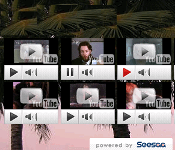

シーサーブログにyoutube動画の使い方
シーサーブログは無料ブログのなかでも自由度が高いブログでおすすめな無料ブログですが、ブログカスタマイズの方法としてユーチューブ動画を取り入れてみるのもおすすめカスタマイズです。
再生回数が多い場合は被リンク的なＳＥＯにもなると思うのでアクセスアップの要因にもいいかもしれません。nofollowな被リンクではありますが、ウェブマスターツールでは外部リンクとして大量の被リンクにカウントされることもあるようです。
また、ユーチューブ動画をブログに貼り付ける場合もバリッド対応させるとＨＴＭＬ的にもいい感じになると思います。ＨＴＭＬ的な書き方が気になる人は取り入れてみるといいと思います。
ブログのタイプ別に見るyoutube動画利用比較
ブログのタイプ別によって、youtube動画の使用方法も若干変化させるようにするといい感じだと思います。グーグルの場合は検索結果の１ページ目にはけっこうな確率でyoutube動画が表示されていることがあるので、ブログに貼り付けた場合でもプラスにこそなれマイナス要因にはならないのではないかと思うんです。
映画やドラマ内容のブログ
まず、youtube動画のブログでの使用方法として映画やドラマ関係のブログの場合は予告編やドラマのＯＳＴ関係のものがあれば表示させるのがいいと思います。著作権などが大丈夫そうな場合はyoutube動画を拡大させて大きな画像設定（詳細は無料ブログにユーチューブ動画貼る方法）にするといいのではないでしょうか。レイアウトが崩れる場合もありますが、迫力のあるyoutube動画になるので映画ブログ関係の場合はおすすめです。
音楽コンテンツ系のブログ
音楽コンテンツの場合は画像はあまり重要視させる必要はないのではないかなという気がします。思いっきり小さく表示させるようにして、テーブルタグでお気に入りの曲を１０個ぐらい並べてみるのもいいかもしれません。ただ、カテゴリページなどには大量に表示されることになるので、そうなると重くてしかたないんで、６個ぐらいまでを個別記事のつづきを読むの箇所に貼り付けておくといいと思います。

ノウハウ系のブログ
ノウハウ系のブログの場合では動画で説明した方がわかりやすいということもあるのかなって気がします。このブログのサイドバーにも私が作成したyoutube動画がありますが、無料動画の作成ツールを使えばわりと簡単にできてしまいます。現在ではもっと上手に作成することができるようになったのですが、改めて作成するのも面倒なんでほったらかしです。再生回数が大量にある場合は動画のコメント欄に自分のブログへのリンクを貼り付けておくと若干いい感じだと思います。
グラビアアイドル系のブログ
グラビアアイドル系のブログの場合はキーワードを指定して拾ってくる感じのyoutube動画にすればいいと思います。動画内容によっては著作権違反により削除されてしまうことがあるので、その都度張り替えるのは面倒な分野だと思います。
グーグルの動画ユニットでキーワードを指定しておけばそういうこともなくなるのではないかなって気がします。たとえば、安田みさこのページには安田みさこというキーワードを設定しておけばかってに拾ってきてくれるので、ページごとで違う動画が表示されて楽チンです。
ニュース関連文章メインのブログ
芸能ニュースなどの文章中心のブログの場合でも、動画があるのとないのとでは滞在率が若干違ってくるのではないかなという気がします。この利用方法がどうにかうまくいかないかなという気がするのですが、わたしは若干小さめの300×250ぐらいの大きさで使用しています。
でも文章の途中においておくと、あとの記事が読まれなくなる確率が大だと思うので、最後の３行ぐらい前においておくのがいい感じではないでしょうか。一般的に記事が終了したあたりは次のアクションをどうするかという箇所だと思うので、そこでワンテンポ動画で間をとってくれるようにしたら、ページビューやその他もろもろもあがったりもするかもです。
いずれにしても、関連性がある動画でないとあまり意味がないと思うので、あなたのブログにあわせてyoutube動画の使用方法もカスタマイズしてみるといいと思います。著作権あれこれもあるので、テレビ関係や映画コンテンツ、アニメ関係は貼らない方がいいと思います。